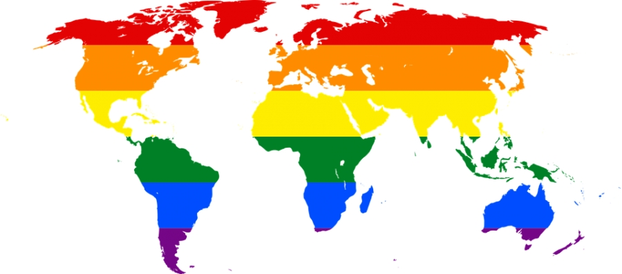

Se refiere al universo sociocultural atribuido al ser masculino y al ser femenino y a las relacio- nes entre los géneros, que abarcan relaciones de poder. Implica el conjunto de atributos, prác- ticas, valores y comportamientos que determinan cómo “debe ser” un varón y cómo “debe ser” una mujer en una sociedad determinada. Es decir, sobre la base de las diferencias biológicas se divide el mundo social y simbólico en “lo femenino” y “lo masculino”. Por su condición social, cultural y, por lo tanto, histórica, implica que puede ser transformada de acuerdo al contexto.
Se refiere al conjunto de características biológicas que determinan lo que es un macho y una hembra en la especie humana. Al nacer se le asigna un sexo a la persona teniendo en cuen- ta, principalmente, la apariencia de los órganos genitales primarios (genitales externos). Si la asignación del sexo no responde a las dos formas socialmente reconocidas (varón o mujer) se suman otras variables biológicas para hacer esa asignación.
El rol es lo que una persona representa y es variable de acuerdo a las circunstancias y los con- textos. En el rol intervienen las distintas maneras de pensar, sentir y actuar que cada cultura establece como propio de la masculinidad y de la femineidad en una sociedad dada y la forma y medida en que las personas nos apropiamos de ellas; abarca aspectos como la forma de ves- tirnos, las actitudes que tenemos, la manera de relacionarnos con nosotros/as mismos y con las demás personas, la manera en que expresamos nuestras emociones y sentimiento, etc.
Se refiere a la vivencia interna e individual del género tal como cada persona la siente profun- damente, la cual podría corresponder o no con el sexo asignado al momento del nacimiento, incluyendo la vivencia personal del cuerpo (que podría involucrar la modificación de la apa- riencia o la función corporal a través de medios médicos, quirúrgicos o de otra índole, siempre que la misma sea libremente escogida) y otras expresiones de género, incluyendo la vestimen- ta, el modo de hablar y los modales5 . La identidad de género es constitutiva de la identidad de las personas y es una categoría auto-percibida, tenemos que respetar la manera que tiene de nombrarse cada uno y cada una.
“Deberá respetarse la identidad de género adoptada por las personas, en especial por niñas, niños y adolescentes, que utilicen un nombre de pila distinto al consignado en su documento nacional de identidad. A su solo requerimiento, el nombre de pila adoptado deberá ser utili- zado para la citación, registro, legajo, llamado y cualquier otra gestión o servicio, tanto en los ámbitos públicos como privados” .
Se refiere a la capacidad de cada persona de sentir una profunda atracción emocional, afectiva y sexual por personas de un sexo-género diferente al suyo, de su mismo sexo-género o de más de un sexo-género, así como a la capacidad de mantener relaciones íntimas y sexuales con estas personas. También se identifican personas asexuales, que no sienten atracción y deseo por personas de ningún sexo-género.
la sigla es un acrónimo para designar colectivamente a las personas cuya sexualidad no se corresponde con la hegemónica – la heterosexual –, es decir, lesbianas, gays, bisexuales, trans e intersex y tiene diversas variables (LGBTI/ LGTBI/ LGBTIQ/ LGBTTQ/ LGBTTs/ LGBTTTS, etc.); ello res- ponde a la particularidad de las relaciones entre diversos colectivos de cada región, sus instancias de aparición, sus negociaciones de visibilidad en las arenas de lo público, su idioma, etc.
persona cuyo afecto y deseo sexual se orienta hacia personas de un sexo- género distinto al propio.
mujer que siente atracción afectiva y/o sexual hacia otras mujeres.
varón que siente atracción afectiva y/o sexual hacia otros varones.
persona cuya atracción afectiva y/o sexual se expresa hacia personas del mismo o distinto sexo-género.
se utiliza para expresar al conjunto de identidades trans, entendidas como las identidades de las personas que desarrollan, sienten y expresan una identidad de género diferente al sexo asig- nado al nacer. Es una expresión genérica que engloba a travestis, transexuales, transgéneros y hombres trans. Estas identidades no presuponen una orientación sexual determinada.
es la construcción identitaria que asume y expresa cotidianamente una identidad de género diferente al sexo/género socialmente asignado. Por lo general para lograr esa ex- presión de género sentida modifican parcialmente sus cuerpos mediante cirugías estéticas, terapias de hormonas, implantes de mamas etc., sin la necesidad de readecuar su genitalidad a su identidad de género. Esta identidad no presupone una orientación del deseo determinada.
aunque en distintos países el término transgénero y travesti adquieren dife- rentes significados, en la Argentina ambos conceptos se refieren a personas que expresan un género (masculino, femenino) diferente al biológico. En otros países se entiende la identidad transgénero desde la capacidad de transitar de un género al otro. Esta identidad no presupo- ne una orientación del deseo determinada.
son las personas que asumen y expresan cotidianamente una identidad de gé- nero diferente al sexo/género socialmente asignado y además de modificar parcialmente sus cuerpos mediante cirugías estéticas, terapias de hormonas, implantes de mamas etc. reade- cuan, o desean readecuar, su genitalidad a su identidad de género. Esta identidad no presupo- ne una orientación del deseo determinada.
personas que asumen y expresan cotidianamente una identidad de género masculina, más allá del sexo/género socialmente asignado. Por lo general para lo- grar esa expresión de género sentida modifican parcialmente sus cuerpos mediante cirugías estéticas, terapias de hormonas, extracción de mamas etc. Además, en algunos casos, pueden también readecuar su genitalidad a su identidad de género. Esta identidad no presupone una orientación del deseo determinada.
personas que sienten concordancia entre el sexo que les fuera asignado en el momento de nacimiento y su identidad de género autopercibida. En el contexto de las teorías de género se utiliza para describir a las personas que no son trans.
el término engloba un amplio espectro de condiciones en las que se produce una variación anatómica respecto del modelo “masculino/femenino” hegemónico. La noción de “variación” es central para abordar la intersexualidad, puesto que refiere a aquellos cuerpos que varían respecto de los parámetros culturales de corporalidad “femenina” o “mas- culina”. Estas variaciones pueden manifestarse a nivel cromosomático (dado por el número y tipo de cromosomas), gonadal (dado por la presencia de testículos u ovarios) y/o genital, y pueden derivar de causas genéticas, hormonales u otros factores. La intersexualidad no es una “urgencia” médica en sí misma, en todo caso se trata de una problemática social, en tan- to amenaza al sistema de clasificación dominante. Las intervenciones quirúrgico-hormonales pretenden justificarse desde la urgencia de anclar firmemente el género en un cuerpo que lo autorice, que lo manifieste reafirmándolo en su carácter de verdad natural. En esta perspecti- va, entendemos que la intersexualidad no es una enfermedad, sino una condición de no con- formidad física con criterios culturales de lo que se entiende como “normalidad” corporal. Las personas intersex tienen derecho a la integridad y la autodeterminación de su propio cuerpo; el consentimiento previo, libre y completamente informado del individuo intersex es un requi- sito que se debe garantizar en todos los protocolos y prácticas médicas.
este término fue utilizado originalmente en Estados Unidos como una expresión dis- criminatoria hacia la comunidad gay. En nuestro idioma puede ser entendido como “anormal”, “enfermo/a”, “marica”, “raro/a” o “puto” A partir de la década del ´80, la injuria queer es reapropiada y resignificada para constituirse como espacio de acción política y resistencia a la normalización, el estigma y la patologización. Intentar definir lo queer es una paradoja, puesto que es en si misma, una posición crítica hacia la definición identitaria, a partir de cuestionar las nociones hegemónicas de sexo, género y deseo en la sociedad. En este sentido cuando se habla de lo queer se suele hacer referencia a un “movimiento post - identitario”. En el ámbito académico algunas de las exponentes de la Teoría Queer son Teresa de Lauretis, Judith Butler, y Beatriz Preciado.
Hace referencia al régimen social, político y económico que presenta a la heterosexualidad como natural y necesaria para el funcionamiento de la sociedad y como el único modelo vá- lido de relación sexoafectiva y de parentesco. Este régimen se sostiene y reproduce a partir de instituciones que legitiman y privilegian la heterosexualidad en conjunción con variados mecanismos sociales que incluyen la invisibilización, exclusión y/o persecución de todas las expresiones de la sexualidad que no se adecuen a él. De acuerdo a este paradigma predomi- nante en occidente desde fines de siglo XIX, la heterosexualidad en el contexto de las uniones conyugales constituye el patrón naturalizado desde donde se valoriza a otros modos de vivir la sexualidad como desviaciones o perversiones. Es por ello que toda acción destinada a erra- dicar la discriminación por orientación sexual y/o por identidad de género es una manera de desarmar las relaciones de poder que se instituyen a partir de la hegemonía social y cultural del régimen heterosexual.
Esta expresión describe la situación de dar a conocer y visibilizar de un modo voluntario, el hecho de vivir la sexualidad de una manera distinta a lo socialmente esperado, es decir, la heterosexualidad, que implica pensar erróneamente, que todas las personas con las que in- teractuamos son heterosexuales. En este sentido, es también un efecto de la presunción de la heterosexualidad. Cada persona decide libremente cuándo y a quién contarle sobre sus preferencias sexuales.
Es una expresión discriminatoria intensa y cotidiana que, por su constante reproducción lle- ga a ser internalizada y naturalizada como parte de la dinámica de las relaciones sociales. En sus distintas manifestaciones, anula o perjudica el reconocimiento, el goce o el ejercicio en pie de igualdad de derechos humanos y libertades fundamentales en los campos económico, social, cultural o en cualquier otro campo de la vida de las personas. Se manifiesta de diversas maneras, entre ellas la invisibilización de las sexualidades distintas a la heterosexual así como también en la violencia verbal, física o simbólica que genera la exclusión y la subordinación de personas lesbianas, gays, trans, bisexuales e intersex. Se mantiene y reproduce a partir de la naturalización de la heterosexualidad como patrón de normalidad, predominante en nuestra sociedad.
Según los Principios de Yogyakarta9 : “Toda persona tiene el derecho a formar una familia, con independencia de su orientación sexual o identidad de género. Existen diversas configuracio- nes de familias. Ninguna familia puede ser sometida a discriminación basada en la orientación sexual o identidad de género de cualquiera de sus integrantes”. La institución familiar es de carácter social, histórico, variable y mutable. Con este concepto nos referimos a las múltiples formas en que se desarrollan los vínculos entre las personas y los modos de constituir una familia. Se distancia del singular “familia”, para desnaturalizar el mo- delo de familia nuclear heterosexual como único existente y legítimo. Lejos de ser lo “natural”, se trata del modelo de familia construido en el marco de la modernidad, como una vía para mejorar la calidad de la fuerza productiva de la población, en el contexto de surgimiento de la sociedad capitalista y el Estado moderno. Entonces, no quiere decir que desde ese momento no hayan existido otros tipos de familias, sino que este modelo se mantiene como dominante a partir de su naturalización y su jerarqui- zación. El movimiento complementario fue el ocultamiento y la proscripción de otros tipos de organización familiar, lo cual implicó su desvalorización e invisibilización.
crianza de niños o niñas a cargo de dos madres.
crianza de niños o niñas a cargo de dos padres.
crianza de niños o niñas a cargo de dos madres o dos padres.
Toda persona tiene el derecho intrínseco a la identidad personal, entendida como el conjunto de atributos y características que permiten individualizar a la persona en sociedad. Para el derecho a la identidad personal, tradicionalmente, se registran dos aspectos: uno dinámico y otro estático. El aspecto dinámico, estaría representando a la construcción de una identidad a lo largo de la vida. Se dice que la persona se va formando con el tiempo, que construye su identidad con las ideas, los sentires, el bagaje histórico-social que hacen a la interacción con la cultura, las costumbres, las condiciones económicas, experiencias de su historia vivencial, de las relaciones interpersonales y la innata expresión de su ser superlativo que impacta con la otredad; y que esto da cuenta de la construcción histórica de la personalidad, que refleja su identidad real. De modo que la identidad personal se forma durante la propia existencia, que se recrea, reinventa y transforma durante los años; pero no es abstracta, las personas desarro- llan una vida concreta exteriorizándose. En definitiva, el derecho a la identidad personal en su faz dinámica es el derecho de la persona a que se le reconozca esa mismidad construida y elaborada a lo largo de los años. Aparte del aspecto dinámico de la identidad personal, se halla el aspecto estático, que tradicionalmente comprende la información genética, las huellas digitales, rasgos biométricos, etc. 10 El bloque de constitucionalidad federal del Estado argentino define las obligaciones que le corresponden en relación con el reconocimiento formal de la identidad de cada uno/a de sus ciudadanos/as, estableciendo una serie de documentos para su explicitación.
La acción de identificación civil, consiste en una actividad en la que el Estado selecciona atri- butos propios de una persona para poder individualizarla de modo único, convirtiéndola en un ser inequívoco y diferenciable del resto de los habitantes de la sociedad. Tal reconocimien- to implica una garantía, tanto para el ejercicio de los derechos, como para el cumplimiento de sus obligaciones.
El nombre es un signo individualizador. En la actualidad, el nombre de las personas se en- cuentra compuesto de prenombre (o lo que denominamos nombre de pila, siendo la forma de designación de un individuo y se adquiere por su inscripción en el Registro Civil) y el ape- llido (designación común a las personas pertenecientes a una familia). A su vez, el nombre es considerado como un derecho y deber de la persona humana. Y el nombre de las personas hoy es pensado como un derecho humano específico. Tanto la Constitución Nacional como la Convención Americana sobre Derechos Humanos, reconocen el derecho al nombre como un derecho autónomo, no obstante su íntima vinculación con el derecho humano de identidad.
Se crea el Documento Nacional de Identidad (DNI), en el año 1968 por la Ley N° 17.671, con el objeto de lograr la unificación de los documentos de los/as ciudadanos/as, a partir de su naci- miento. Desde entonces, el DNI se constituye como el instrumento oficial primario que acredita la identidad de las personas que son ciudadanas argentinas y residentes extranjeras cuya situación migratoria las habilite. El DNI es expedido por el Registro Nacional de las Personas (ReNaPer). En la actualidad, puede enunciarse que el DNI constituye un ejercicio activo de la concepción de ciudadanía, dando marco explícito y auténtico a la existencia humana a través de la materiali- zación del derecho a la identidad; siendo éste un requisito fundamental para el acceso a otros derechos fundamentales, tales como el del voto, el trabajo, la salud, entre muchos.
Constituyen actos de discriminación toda distinción, exclusión, restricción, preferencia, acción u omisión, que arbitrariamente tenga por objeto o por resultado anular o menoscabar el re- conocimiento, goce o ejercicio, en condiciones de igualdad, de los derechos fundamentales reconocidos por la Constitución Nacional, por los tratados internacionales y por las leyes. Una sociedad que practica la discriminación y la desigualdad es una sociedad injusta y antidemo- crática que pierde su potencial de desarrollo y crecimiento.
“a) crear y/o colaborar en la difusión de estereotipos de cualquier grupo humano por caracte- rísticas reales o imaginarias, sean éstas del tipo que fueren, sean éstas positivas o negativas y se vinculen a características innatas o adquiridas;
b) hostigar, maltratar, aislar, agredir, segregar, excluir y/o marginar a cualquier miembro de un grupo humano del tipo que fuere por su carácter de miembro de dicho grupo;
c) establecer cualquier distinción legal, económica, laboral, de libertad de movimiento o acceso a determinados ámbitos o en la prestación de servicios sanitarios y/o educativos a un miembro de un grupo humano del tipo que fuere, con el efecto o propósito de impedir o anular el recono- cimiento, goce o ejercicio de los derechos humanos o libertades fundamentales”.
Un estereotipo es una imagen inflexible construida en base a prejuicios, aptitudes, creencias y opiniones preconcebidas, impuestas por el medio social y cultural que se aplican de forma general a todas las personas pertenecientes a una categoría, sea esta su nacionalidad, etnia, edad, sexo, preferencia sexual, procedencia geográfica, etc.
Es un concepto previo al razonamiento que carece de fundamentación. También es la base, sobre la cual se asienta toda discriminación. Algunos prejuicios son más antiguos y otros más recientes, sin embargo en todos los casos las personas o grupos discriminados son transfor- mados en chivos expiatorios del malestar social propio de cada época y sociedad. Desde los prejuicios se proyectan imágenes erróneas que tienen como consecuencia la cosificación y la invisibilización de las particularidades que convierten en únicas a las personas.
Son una serie de mecanismos culturales que, en el marco de relaciones desiguales de poder, llevan a omitir la presencia de determinado grupo social. En estos procesos resulta habitual recurrir a estereotipos y generalizaciones que constriñen a estos grupos sociales. En este sen- tido la invisibilización deviene de la construcción del concepto social “el otro” o “los otros”, por oposición a “nosotros”.
Proceso por el cual se instauran pautas, construcciones e instituciones socio-culturales como “naturales”. De esta manera, algo que es simplemente una costumbre o una creencia se univer- saliza y se legitima como única e invariable, velando su carácter histórico, social y procesual.
Término usado preferiblemente en lugar de grupos o poblaciones vulnerables. La razón de ser de este concepto es que ningún ser humano, ni grupo poblacional es vulnerable por naturaleza. Son las condiciones de desigualdad económica, sociales, políticas, ambientales y los marcos culturales los que hacen que muchas personas y grupos de personas vivan en situación de vulnerabilidad y de privación de derechos. Por eso, el término adecuado es personas o grupos vulnerabilizados. Tal como lo afirma el Plan Nacional contra la Dis- criminación: “…este Plan abandona el concepto de comprender a dichas fracciones como ‘grupos vulnerables’, dado que su situación de vulnerabilidad responde a los problemas de la sociedad que los discrimina y los ‘hace víctimas’ y no a una supuesta ‘condición’ que los haría vulnerables por sí mismos. Ninguno de estos grupos sería ‘vulnerable’ si no hubiera una sociedad dispuesta a “vulnerarlos”. 14
Este término permite reformular la relación entre grupos hegemónicos y no hegemónicos, para promover la inclusión igualitaria a los bienes sociales y económicos de estos últimos. Atiende a la necesidad de ampliar las concepciones de la lógica heteronormativa y funda la noción de que la diferencia no es negativa, sino que enriquece y amplia las sociedades.
Son las medidas adoptadas en favor de determinados grupos de la sociedad a fin de garanti- zar el ejercicio y goce efectivo de los derechos y libertades cuyo acceso se encuentra lesiona- do, restringido, alterado, menoscabado u obstaculizado. La acción afirmativa no es discriminatoria, ya que permite compensar desigualdades favore- ciendo la igualdad de oportunidades, cuando la simple prohibición de la discriminación no resulta suficiente.
Es la manera efectiva de participación en una democracia. Esta consiste en la implementación de políticas públicas encaminadas a la vinculación de todos los miembros de la sociedad para la participación de los beneficios que esta adquiere. Tiene por característica central el des- conocimiento de la discriminación. La inclusión social se vincula directamente con la noción de desarrollo humano. Significa reconocer el valor que hay en cada diferencia de los grupos humanos y el respeto por la diversidad para lograr condiciones de igualdad y disfrutar de los derechos fundamentales. Las políticas sociales son las políticas de inclusión social1
Alude a situaciones en las que se lesionan o restringen derechos y se inhibe el desarrollo huma- no y social. Es la pérdida de posibilidades de formar parte de distintos ámbitos de la sociedad
Concepto propiciado por la Organización Internacional del Trabajo. Se menciona por primera vez en la “Memoria del Director General a la Conferencia Internacional del Trabajo” de 1999. El concepto de Trabajo Decente fue formulado por los mandantes de la OIT – gobiernos y organizaciones de empleadores y trabajadores – como una manera de identificar las priorida- des de la Organización. Se basa en el reconocimiento de que el trabajo es fuente de dignidad personal, estabilidad familiar, paz en la comunidad, democracias que actúan en beneficio de todos, y crecimiento económico, que aumenta las oportunidades de trabajo productivo y el desarrollo de las empresas. (Oficina de País de la OIT para la Argentina) Es aquel trabajo que dignifica al cumplir con las condiciones que debe reunir una relación laboral: que sea registrado, que brinde protección y prevención de accidentes laborales, que garantice el acceso a los beneficios de la seguridad social, que permita el desarrollo de las propias capacidades, que incluya el diálogo social y la igualdad de oportunidades en el acce- so al trabajo sin discriminación de ningún tipo. “Se torna imprescindible construir ambientes laborales respetuosos e inclusivos de la diversidad sexual (…) Esta construcción se logrará a partir de las acciones y miradas conjuntas entre trabajadores/as, empleadores/as, entidades gubernamentales y no gubernamentales.
Las buenas prácticas laborales sitúan a la persona humana y su dignidad en el centro de la preocupación organizacional, intentando eliminar la desigualdad y la discriminación. Se hace referencia a “aquella experiencia de carácter colectivo que en el marco del respeto a los principios y derechos fundamentales en el trabajo, (…) pueda ser calificada como exitosa para garantizar el bienestar de los trabajadores y el progreso de las empresas, mejorando el nivel de relaciones interno, garantizando condiciones adecuadas de trabajo y empleo, facili- tando el incremento de la productividad y el salario y desarrollando una cultura de concerta- ción puesta en marcha por el acuerdo de trabajadores y empleadores, es decir, facilitando un trabajo decente”
En el Convenio N° 111 del año 1958, la OIT define a la discriminación como “cualquier distin- ción, exclusión o preferencia basada en motivos de raza, color, sexo, religión, opinión política, ascendencia nacional u origen social, que tenga por efecto anular o alterar la igualdad de oportunidades o de trato en el empleo y la ocupación”. En el año 2007, en su Informe Global “La Igualdad en el trabajo: afrontar los retos que se plantean”, en su artículo 156 agrega a la orientación sexual y a la identidad de género, como otra forma de dis- criminación en el ámbito laboral: “…Los empleados y las empleadas pueden sufrir discriminación en el lugar de trabajo si consta o se sospecha que son lesbianas, gays, bisexuales o transexuales, categorías a las que se hace cada vez más referencia en inglés con el acrónimo LGBT”. La discriminación en el ámbito laboral se observa tanto en la negación de acceso al empleo como en la dificultad para la conservación del mismo debido a negación de ascensos, de pres- taciones de la seguridad social para la pareja del mismo sexo o los/as hijos/as; exclusión, recha- zo, burlas, chistes homofóbicos, provocando en la persona automarginación, ocultamiento de su orientación sexual (invisibilización), y el riesgo de situaciones de suicidios.
Enmarcada en la Ley de Identidad de Género Nº 26.743, significa el pleno acceso de las per- sonas a su atención en los servicios de salud desde una perspectiva de derechos, eliminando cualquier tipo de enfoque patologizador.
Siguiendo con la Ley de Identidad de Género, en su artículo 11 reconoce el “derecho al libre desarrollo personal” refiriéndose a que: “Todas las personas mayores de dieciocho (18) años de edad podrán, conforme al artículo 1° de la presente ley y a fin de garantizar el goce de su salud integral, acceder a intervenciones quirúrgicas totales y parciales y/o tratamientos integrales hormonales para adecuar su cuerpo, incluida su ge- nitalidad, a su identidad de género autopercibida, sin necesidad de requerir autorización judicial o administrativa. Para el acceso a los tratamientos integrales hormonales, no será necesario acreditar la voluntad en la intervención quirúrgica de reasignación genital total o parcial. En ambos casos se requerirá, únicamente, el consentimiento informado de la persona. En el caso de las personas menores de edad regirán los principios y requisitos establecidos en el artículo 5° para la obtención del con- sentimiento informado. Sin perjuicio de ello, para el caso de la obtención del mismo respecto de la intervención quirúrgica total o parcial se deberá contar, además, con la conformidad de la autori- dad judicial competente de cada jurisdicción, quien deberá velar por los principios de capacidad progresiva e interés superior del niño o niña de acuerdo con lo estipulado por la Convención sobre los Derechos del Niño y en la Ley 26.061 de protección integral de los derechos de las niñas, niños y adolescentes. La autoridad judicial deberá expedirse en un plazo no mayor de sesenta (60) días contados a partir de la solicitud de conformidad. Los efectores del sistema público de salud, ya sean estatales, privados o del subsistema de obras sociales, deberán garantizar en forma permanente los derechos que esta ley reconoce. Todas las prestaciones de salud contempladas en el presente artículo quedan incluidas en el Plan Médico Obligatorio, o el que lo reemplace, conforme lo reglamente la autoridad de aplicación”. 19 Se Reglamenta artículo 11 de la Ley Nº 26.743 sobre el derecho de todas las personas mayores de dieciocho (18) años de edad a fin de garantizar el goce de su salud integral, acceder a inter- venciones quirúrgicas totales y parciales y/o tratamientos integrales hormonales para adecuar su cuerpo, incluida su genitalidad, a su identidad de género autopercibida, sin necesidad de requerir autorización judicial o administrativa.20
“La hormonización y las intervenciones quirúrgicas son una decisión personal. No todas las perso- nas tienen las mismas expectativas sobre su construcción corporal ni todas desean llevar a cabo modificaciones. Muchas no se sienten de un género o de otro, sino que construyen su identidad en un tránsito entre los géneros, franqueándolos y/o negándolos”. Se entiende por intervenciones quirúrgicas totales y parciales a las cirugías que ayuden a ade- cuar el cuerpo a la identidad de género autopercibida.
Las mismas comprenden: Mastoplastía de aumento, Mastectomía, gluteoplastía de aumen- to, Orquiectomía, Penectomía, Vaginoplastía, Clitoroplastía, Vulvoplastía, Anexohisterectomía, Vaginectomía, Metoidioplastía, Escrotoplastía y Faloplastía con prótesis peneana22, resultando la presente enumeración de carácter meramente enunciativo y no taxativo. Se entiende por tratamientos hormonales integrales a aquellos que tienen por finalidad cam- biar los caracteres secundarios que responden al sexo gonadal (dado por la presencia de testí- culos u ovarios), promoviendo que la imagen se adecue al género autopercibido.23
La “Revuelta de Stonewall” se produjo el 28 de junio de 1969 en los alrededores del Pub Stonewall Inn, ubicado en un barrio popular de Nueva York – el Green- wich Village- donde se encontraban gays, lesbianas y trans que fueron víctimas de una brutal razzia policial. Aquella represión encontró como respuesta una revuelta, que se prolongó por varios días. Centenares de lesbianas, gays y trans salieron a las calles cansados de ser perseguidos y golpeados por la policía. Cabe destacar, a modo de contexto, que a finales de la década del 60, se expresaron con fuerza otros movimientos sociales, como el movimiento afroamericano por los derechos civiles (1955-1968), la contracultura de los 60 y las manifestaciones contra la guerra que le dieron contexto e impulso a la revuelta de Stonewall. Esa revuelta es citada como la primera ocasión en la historia de Estados Unidos en la que gays, lesbianas y trans lucharon contra un sistema que los perseguía y es ampliamente reconocida como el catalizador del movimiento moderno por los derechos LGBT en el mundo entero. Así fue que el 28 de junio de 1970 tuvo lugar la primera Marcha del Orgullo Gay en la Ciudad de Nueva York y en Los Ángeles, conmemorando el aniversario de los disturbios de Stonewall. Hoy las marchas se organizan por todo el mundo.
En nuestro país, se celebra el primer sábado de noviembre de cada año, en conmemoración de la creación de Nuestro Mundo, el primer movimiento ho- mosexual en la Argentina. La primera Marcha del Orgullo se realizó el 28 de junio de 1992 en la Ciudad de Buenos Aires, en la cual participaron no más de doscientas personas, muchas de ellas con sus rostros tapados por miedo a la discriminación en sus trabajos y en sus propias familias. Desde esa fecha a la actualidad las marchas del orgullo se extendieron a diferentes localidades de nuestro país. Cabe señalar que este evento se ha constituido en un hecho social, político, cultural y turístico relevante para la ciudad autónoma y la Argentina toda.
Hasta ahora, la que se organiza el primer o segundo sábado de noviembre en la Ciudad Autó- noma de Buenos Aires es la más masiva, con la concurrencia de cientos de miles de personas, y con mayor visibilidad, pero continúan creciendo y replicándose las experiencias en otras provincias y localidades del país.
Es también conocido como Día de Lucha contra la Discriminación por Orientación Sexual e Identidad de Género. Fue impulsado por las organizaciones de la sociedad civil para celebrar el día 17 de mayo de 1990. En este día, la Asamblea General de la Organización Mundial de la Salud (OMS) aprobó la 10ª revisión de la Estadística Internacional de Clasificación de las En- fermedades y Problemas de Salud Relacionados (CIE-10). Esta revisión reconoció que la “orien- tación sexual” (heterosexual, bisexual y homosexual) por sí misma no debe ser vista como un trastorno”. Hasta este momento, la homosexualidad era considerada un trastorno sexual.
Natalia “La Pepa” Gaitán fue asesinada por el padrastro de su novia el 7 de marzo de 2010 en la ciudad de Córdoba. El crimen de Natalia se convirtió en una bandera de la lucha por la igual- dad y la visibilidad de las mujeres lesbianas en todo el país. En su recuerdo, la Legislatura de la ciudad de Buenos Aires convirtió en ley la declaración del Día de la Visibilidad Lésbica.
Es impulsado por la campaña Stop Trans Pathologization (STP) para los terceros sábados de octubre de cada año, desde el 2007. Los objetivos principales de la campaña son la retirada de la categoría de “disforia de género” / “trastornos de la identidad de género” de los catá- logos diagnósticos DSM de la American Psychiatric Association (Asociación Estadounidense de Psiquiatría) y CIE de la Organización Mundial de la Salud, así como la lucha por los dere- chos sanitarios de las personas trans. Para facilitar la cobertura pública de la atención sanitaria trans-específica, STP propone la inclusión de una mención no patologizante en la CIE-11. En términos más generales, repudia la “psiquiatrización” de las personas trans, que concibe a las identidades y cuerpos no normativos (situados fuera del orden cultural dominante) con iden- tidades y cuerpos patológicos. El paradigma en el que se inspiran los procedimientos actuales de atención a la transexualidad y la intersexualidad convierte a estos en procesos médicos de normalización binaria.
Se conmemora los 18 de marzo, en recuerdo del fallecimiento de Claudia Pía Baudracco, desta- cada activista del colectivo trans y una de las principales promotoras de la Ley de Identidad de Género. Fue fundadora de ATTTA (Asociación de Travestis, Transexuales y Transgéneros de Ar- gentina) y Secretaria de Mujeres Trans de la FALGBT (Federación Argentina de Lesbianas, Gays, Bisexuales y Trans). El Día de la Promoción de los Derechos de las Personas Trans fue instituido por la Legislatura de la Ciudad de Buenos Aires a modo de homenaje, por la continuación de la lucha por la inclusión de las personas trans y el respeto de sus derechos.
La bandera del orgullo gay, fue diseñada por el artista estadounidense Gilbert Baker y ondeó por vez primera el 25 de junio de 1978, durante el Festival del Orgullo LGBT que se realizó en San Francisco, California. La versión actual consiste en seis franjas de colores rojo, naranja, amarillo, verde, azul y violeta, que reproducen el orden de los colores del arco iris. Se ha popularizado alrededor del mundo como símbolo de la lucha por el reconocimiento de la diversidad sexual.
Artículo 1°: “Quien arbitrariamente impida, obstruya, restrinja o de algún modo menoscabe el pleno ejercicio sobre bases igualitarias de los derechos y garan- tías fundamentales reconocidos en la Constitución Nacional, será obligado, a pedido del damnificado, a dejar sin efecto el acto discriminatorio o cesar en su realización y a reparar el daño moral y material ocasionados.
A los efectos del presente artículo se considerarán particularmente los actos u omisiones discriminatorios determinados por motivos tales como raza, reli- gión, nacionalidad, ideología, opinión política o gremial, sexo, posición econó- mica, condición social o caracteres físicos”
La ley socialmente conocida como “Matrimonio Igualitario” (N° 26.618) de la República Argentina constituye una reforma parcial del Código Civil - que data de 1869 –, de la Ley del Registro del Estado Civil y Capacidad de las Personas (N° 26.423) y de la Ley del Nombre (N°18.248). Fue sancionada el 15 de julio de 2010 y promulgada por la Presidenta de la Nación, Dra. Cristina Fernández de Kirchner el 21 de julio de 2010.
El núcleo del cambio radicó en una frase que se agregó al artículo 172 del Có- digo Civil, el cuál quedo redactado del siguiente modo “El matrimonio tendrá los mismos requisitos y efectos, con independencia de que los contrayentes sean del mismo o de diferente sexo
Las demás modificaciones son consecuencia de aquélla, y básicamente consisten en cambios terminológicos: Se remplaza “hombre y mujer”, por el genérico “contrayentes”. En vez de “padre y madre”, el genérico “padres” y se remplazó el “marido y mujer” por “unidos en matrimonio”.
La Ley determinó que en el caso de hijos de matrimonios entre personas del mismo sexo de- berá constar en la partida de nacimiento “el nombre y apellido de la madre y su cónyuge, y tipo y número de los respectivos documentos de identidad”. (Art. 36) y que “Los hijos matrimoniales de cónyuges del mismo sexo llevarán el primer apellido de alguno de ellos. A pedido de éstos podrá inscribirse el apellido compuesto del cónyuge” (Art. 37)
Todas las referencias a la institución del matrimonio que contiene el ordenamiento jurídico argentino se entenderán aplicables tanto al matrimonio constituido por dos personas del mis- mo sexo, como al constituido por dos personas de distinto sexo.
Los/as integrantes de las familias cuyo origen sea un matrimonio constituido por dos perso- nas del mismo sexo, así como un matrimonio constituido por personas de distinto sexo, ten- drán los mismos derechos y obligaciones.
Ninguna norma del ordenamiento jurídico argentino podrá ser interpretada ni aplicada en el sentido de limitar, restringir, excluir o suprimir el ejercicio o goce de los mismos derechos y obligaciones, tanto al matrimonio constituido por personas del mismo sexo como al formado por dos personas de distinto sexo.
El DNU No 1.006, firmado por la Presidenta de la Nación Cristina Fernández de Kirchner en julio de 2012, se basó en “estrictas razones de igualdad” equiparando los derechos de los niños y niñas nacidos/as antes de la Ley de Matrimonio Igualitario con los nacidos/as después, lo que permitió emitir nuevas actas de nacimiento completando los datos de ambas madres y el doble apellido.
Esta normativa permite que los niños/as nacidos/as en familias comaternales antes de la sanción del matrimonio igualitario accedan a previsiones sociales, la continuidad del vínculo en caso de separación o muerte de una de sus madres, la circulación y la toma conjunta de decisiones médicas y educativas, los derechos hereditarios, las licencias laborales de ambas madres por enfermedad de sus hijos/as y el reconocimiento legal del vínculo con sus familias extendidas: abuelas y abuelos, tíos, tías, primos, primas, etc.
La Resolución 464/2012 (4/2/12) del Registro Nacional de las Personas RENAPER, modifica la Resolución N° 3459/11.
En los DNI para recién nacidos/as, como medida de seguridad, se incorporó en el dorso del carnet el nombre y apellido de su madre y padre. Luego se lo remplazó por la formula “hijo de:” e “hijo de:” para incorporar indistintamente a un mamá y un papá o dos mamás o dos papás.
Identidad de Género: Rectificación registral de sexo y cambio de nombre/s de pila e imagen.
La sanción de la Ley de Identidad de Género es un paso fundamental para la visibilidad, iden- tidad e integración de las personas trans en nuestras comunidades.
Travestis, transexuales, transgéneros y hombres/varones trans tienen derecho a que se reco- nozca su identidad de género autopercibida y a recibir un trato digno.
Reconoce el derecho humano fundamental de toda persona al reconocimiento de su iden- tidad de género, a ser tratada de acuerdo a ella, al libre desarrollo de su persona y en parti- cular, a ser identificada de ese modo en la Partida de Nacimiento y el Documento Nacional de identidad (DNI).
En ningún caso se pueden exigir como condición una intervención quirúrgica, ni terapias hormonales u otro tratamiento psicológico o médico.
Perspectiva despatologizante, desjudicializante y desestigmatizante.
Art 12 “Trato digno”: deberá respetarse la identidad de género adoptada por las personas, en es- pecial por niñas, niños y adolescentes, que utilicen un nombre de pila distinto al consignado en su documento nacional de identidad. A su solo requerimiento, el nombre de pila adoptado deberá ser utilizado para la citación, registro, legajo, llamado y cualquier otra gestión o servicio, tanto en los ámbitos públicos como privados. Cuando la naturaleza de la gestión haga necesario registrar los datos obrantes en el documento nacional de identidad, se utilizará un sistema que combine las iniciales del nombre, el apellido completo, día y año de nacimiento y número de documen- to y se agregará el nombre de pila elegido por razones de identidad de género a solicitud del interesado/a. En aquellas circunstancias en que la persona deba ser nombrada en público deberá utilizarse únicamente el nombre de pila de elección que respete la identidad de género adoptada.
Reglamentación del art. 11 de la Ley N° 26.743 de Identidad de Género.
Acceso integral a los procedimientos y técnicas médico-asistenciales de reproducción médicamen- te asistida. Pueden acceder todas las personas, mayores de edad, sin limitaciones que impliquen discriminación o exclusión fundadas en la orientación sexual o estado civil de quienes peticionan.
Art 3: En el marco de la presente ley se reconoce a la salud mental como un proceso deter- minado por componentes históricos, socio-económicos, culturales, biológicos y psicológicos, cuya preservación y mejoramiento implica una dinámica de construcción social vinculada a la concreción de los derechos humanos y sociales de toda persona.
Se debe partir de la presunción de capacidad de todas las personas.
En ningún caso puede hacerse diagnóstico en el campo de la salud mental sobre la base exclusiva de:
a) status político, socio-económico, pertenencia a un grupo cultural, racial o religioso;
b) demandas familiares, laborales, falta de conformidad o adecuación con valores morales, sociales, culturales, políticos o creencias religiosas prevalecientes en la comunidad donde vive la persona;
c) elección o identidad sexual;
d) la mera existencia de antecedentes de tratamiento u hospitalización.
Establece como derechos esenciales del/a paciente en su relación con los profesionales e insti- tuciones de la salud: la asistencia sin discriminación alguna por “sus ideas, creencias religiosas, políticas, condición socioeconómica, raza, sexo, orientación sexual o cualquier otra condición”; el trato digno y respetuoso; el derecho a la intimidad y a la confidencialidad, a la interconsulta médica. Asimismo, avanza en la explicitación de los requisitos y formas del consentimiento informado. También establece que el/la paciente es el/la titular de la historia clínica, siendo las instituciones de salud custodio de ésta, con la obligación de suministrar una copia al solo requerimiento del/la paciente.
Art 1: establécese que todos los educandos tienen derecho a recibir educación sexual integral en los establecimientos educativos públicos, de gestión estatal y privada de las jurisdicciones nacional, provincial, de la Ciudad Autónoma de Buenos Aires y municipal. A los efectos de esta ley, entiéndase como educación sexual integral la que articula aspectos biológicos, psicológi- cos, sociales, afectivos y éticos.
Art 3: la educación es una prioridad nacional y se constituye en política de Estado para cons- truir una sociedad justa, reafirmar la soberanía e identidad nacional, profundizar el ejercicio de la ciudadanía democrática, respetar los derechos humanos y libertades fundamentales y fortalecer el desarrollo económico-social de la Nación.
Art 11 inciso c): brindar una formación ciudadana comprometida con los valores éticos y de- mocráticos de participación, libertad, solidaridad, resolución pacífica de conflictos, respeto a los derechos humanos, responsabilidad, honestidad, valoración y preservación del patrimonio natural y cultural; p) brindar conocimientos y promover valores que fortalezcan la formación integral de una sexualidad responsable.
Artículo 1°: — OBJETO. Esta ley tiene por objeto la protección integral de los derechos de las niñas, niños y adolescentes que se encuentren en el territorio de la República Argentina, para garantizar el ejercicio y disfrute pleno, efectivo y permanente de aquellos reconocidos en el ordenamiento jurídico nacional y en los tratados internacionales en los que la Nación sea parte.
Los derechos aquí reconocidos están asegurados por su máxima exigibilidad y sustentados en el principio del interés superior del niño.
La omisión en la observancia de los deberes que por la presente corresponden a los órganos guber- namentales del Estado habilita a todo ciudadano a interponer las acciones administrativas y judicia- les a fin de restaurar el ejercicio y goce de tales derechos, a través de medidas expeditas y eficaces.
Art 3 “Objetivos” inciso m): promover la protección y salvaguarda de la igualdad entre hom- bres y mujeres, y el tratamiento plural, igualitario y no estereotipado, evitando toda discrimi- nación por género u orientación sexual.
Art 70. — La programación de los servicios previstos en esta ley deberá evitar contenidos que promuevan o inciten tratos discriminatorios basados en la raza, el color, el sexo, la orientación sexual, el idioma, la religión, las opiniones políticas o de cualquier otra índole.
Art 81. — Emisión de publicidad. Los licenciatarios o autorizados de los servicios de comu- nicación audiovisual podrán emitir publicidad conforme a las siguientes previsiones: “ i) Los avisos publicitarios no importarán discriminaciones de raza, etnia, género, orientación sexual, ideológicos, socio-económicos o nacionalidad, entre otros (…).”
Art. 1° — Sustitúyense los incisos 1º y 4° del artículo 80 del Código Penal que quedarán redac- tados de la siguiente forma:
Art. 80 --Se impondrá reclusión perpetua o prisión perpetua, pudiendo aplicarse lo dispuesto en el artículo 52, al que matare:
n Inc. 1°: a su ascendiente, descendiente, cónyuge, ex cónyuge, o a la persona con quien man- tiene o ha mantenido una relación de pareja, mediare o no convivencia.
Inc. 4°: por placer, codicia, odio racial, religioso, de género o a la orientación sexual, identidad de género o su expresión.
Modificación del Código Civil y Comercial de la Nación.